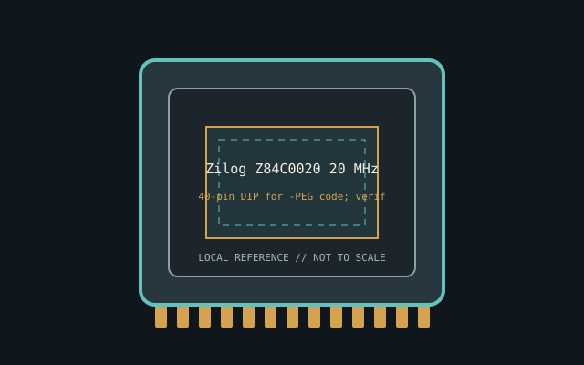

[ INDIVIDUAL CPU COMPONENT ]
Zilog Z84C0020 20 MHz
CMOS Z80, 20 MHz grade; 8-bit data/16-bit address, Z80 compatible. Model-specific record; confirm the complete part marking before installation.

IDENTIFICATION: Zilog Z84C0020 20 MHz. Product name alone does not establish package, stepping, voltage or firmware compatibility.
Verified model specifications
| Catalog path | Other → Zilog processors |
|---|---|
| Model and compute | CMOS Z80, 20 MHz grade; 8-bit data/16-bit address, Z80 compatible |
| Package / socket | 40-pin DIP for -PEG code; verify suffix |
| Compatibility | Z80 bus timing, supply and clock; CMOS differs from NMOS |
| Stepping and variants | Verify full order suffix and speed grade |
Compatibility and service
- Z80 bus timing, supply and clock; CMOS differs from NMOS
- Verify full order suffix and speed grade
- Check host clock/voltage; clones may differ in cycle timing
- Confirm board manual, exact CPU support list, firmware, voltage/power, memory and cooling before use; never force a package.
Service & archival notes
Check host clock/voltage; clones may differ in cycle timing
Photograph package, markings, contacts and date/lot codes before repair. Log host board, BIOS/microcode, memory, cooler, condition, provenance and source revision.
Sources & further reading
- Zilog Z80 CPU User ManualManufacturer instruction/timing reference; check exact suffix.
- Zilog documentationManufacturer datasheets and archive.
- Various Creators — Z80/Z180 Retro computer overview 2026Independent video review; treat as supplementary context, not primary manufacturer documentation.
Manufacturer documents take precedence. Family-level references may not resolve every stepping; verify the marking and motherboard CPU list.